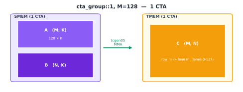

Blackwell Tensor Core：tcgen05.mma#
概览
tcgen05.mma通常从 SMEM 读取 A、B，并在 TMEM 中更新 C/D accumulator；epilogue 再通过tcgen05.ld将结果读回 registers。cta_group::1使用当前 CTA，cta_group::2同时使用一个 CTA pair；两种模式对应不同的 TMEM accumulator 映射。Block-scaled MMA 还需要位于 TMEM 的 SFA、SFB；在本章采用的加载路径中，它们先进入 SMEM，再由
tcgen05.cp搬入 TMEM，并根据 A、B 在 CTA pair 中的分工进行分片或复制。
“Tensor Core 数据布局的演进”一章已经介绍了矩阵乘累加（Matrix Multiply-Accumulate，MMA）在 Ampere、Hopper 和 Blackwell 架构上的数据路径。本章将进一步聚焦 Blackwell 的 tcgen05.mma：一条 MMA 指令如何发起，累加器如何映射到 TMEM，以及 cta_group 如何决定操作使用当前 CTA 还是一个 CTA pair 的资源。
前一章讨论的 TMA（异步数据搬运：TMA）通常负责将 A、B tile 异步搬入 SMEM。这里从 A、B 已经位于 SMEM 中这一阶段开始，介绍 tcgen05.mma 如何执行矩阵乘累加，结果如何映射到 TMEM，以及为什么 block-scaled MMA 还需要一条额外的 scale-factor 数据路径。
保持默认设置 M=128、N=16，并沿 K 维逐步推进计算，可以观察各次迭代产生的部分和如何累加到 TMEM 中。也可以切换 A、B 的 transpose 设置，或者改变 N，比较不同配置下输入 tile、输出 tile 和指令参数的变化。
先看图中的默认状态。图中的每个 cell 表示一个 16×16 element block，因此输出 tile C 的 shape 虽然是 128×16，在图中会显示为纵向 8 个、横向 1 个 cells。每次点击 K iteration，Tensor Core 会读取 A 的一个 128×16 slice，也就是 8×1 个 blocks，以及 B 的一个 16×16 slice，也就是 1 个 block，并生成一个 128×16 的部分和。
第一次迭代使用 accum=0，不读取 TMEM 中原有的累加值，而是直接将当前乘积写入对应的 C tile：
C[0:128, 0:16] =
A[0:128, k:k+16] × B[k:k+16, 0:16]
后续迭代切换为 accum=1，将新的部分和累加到 TMEM 中已有的结果上：
C[0:128, 0:16] +=
A[0:128, k:k+16] × B[k:k+16, 0:16]
所有 K iterations 都会更新同一块 128×16 TMEM 区域。只有在最后一次 K iteration 完成后，这块区域中才保存着最终的 C tile。
图底部还给出了本次 MMA 使用的 descriptors 和 PTX 指令。下一节会逐一说明其中的字段。
接下来介绍指令发起方式、cta_group 的操作范围和 TMEM layout。
tcgen05.mma 如何执行#
tcgen05.mma 是 Blackwell Tensor Core 的矩阵乘累加指令。它处理的是一个完整的矩阵 tile，而不是由某个 thread 独立完成的标量乘加。
与 Ampere 的 mma.sync 和 Hopper 的 wgmma.mma_async 不同，tcgen05.mma 具有 single-thread semantics。只需由一个选中的 thread 发出指令，硬件就会启动完整的 tile-level 矩阵乘累加，其他 threads 不需要分别提交同一条 MMA 指令。
下面是 A、B 都来自 SMEM，且不使用 block scaling 时，tcgen05.mma 的常见指令格式：
tcgen05.mma.cta_group.kind
[d-tmem], a-desc, b-desc, idesc,
{disable-output-lane}, enable-input-d {, scale-input-d};
各部分的作用如下：
字段 |
作用 |
|---|---|
|
指定 MMA 使用当前 CTA，还是一个 CTA pair 的资源 |
|
指定 A、B 元素所属的数据类型类别 |
|
C/D accumulator 在 TMEM 中的起始地址 |
|
描述 A、B 在 SMEM 中的地址与布局 |
|
指定 M、N、K、A/B 和 C/D 的具体数据类型，以及 operand major mode 等指令参数 |
|
指定不更新结果的 TMEM lanes；默认示例不屏蔽任何 lane |
|
对应交互图中的 |
|
可选参数，用于在累加前缩放原有的 D；本章的例子不使用它 |
交互图的默认配置使用 cta_group::1.kind::f16。本书后续的 kernels 也通常使用 .kind::f16，并在 idesc 中选择 f32 accumulator。.kind::f16 只指定 A、B 属于 16-bit 浮点类型类别；A、B 具体使用 f16 还是 bf16，以及 C/D 使用 f16 还是 f32，都由 idesc 指定。
cta_group 不改变 single-thread semantics，只决定这次 MMA 使用当前 CTA，还是一个 CTA pair 的资源。具体的 CTA 分工和 TMEM 映射，以及 block-scaled 形式所需的 SFA、SFB TMEM 地址，将在下方相关小节说明。
对于本章主要讨论的 A、B 来自 SMEM 的路径，需要同时考虑两类 layout：
SMEM layout 决定 Tensor Core 如何解释和读取 A、B；
TMEM layout 决定 C/D accumulator 如何映射到 TMEM 的 lanes 和 columns。
这两种 layout 位于不同的 memory spaces，具体映射由当前 tcgen05.mma 的 instruction shape、数据类型和 operand major mode 决定。本章沿用“数据布局及其记号”一章介绍的命名轴和 swizzle 概念来描述这些映射。
发出 tcgen05.mma 只表示异步操作已经启动，并不表示结果已经写入完成。同一个 thread 可以连续发出一个或多个 MMA，然后执行
tcgen05.commit
让一个 mbarrier 跟踪该 thread 此前发出的异步 tcgen05 操作。硬件完成这些操作后，会在对应的 mbarrier 上发出完成信号。
在等待期间，kernel 中的其他 warps 可以继续搬运或准备后续 tiles。真正需要通过 tcgen05.ld 读取 accumulator 时，consumer 必须先等待对应的 mbarrier 完成，并执行
tcgen05.fence::after_thread_sync
建立完成通知与后续 TMEM 访问之间的顺序。否则，epilogue 可能读到仍在更新的 TMEM 数据。后面的异步同步章节会详细介绍这套机制。
TMEM 中的 Accumulator#
在 Ampere 和 Hopper 上，从 PTX 编程模型来看，accumulator 位于 registers 中。MMA 生成的结果以 register fragment 的形式分布在参与计算的 threads 之间，epilogue 可以直接读取并处理这些值。Accumulator tile 越大，这些长期存活的 fragments 占用的 registers 就越多。
Blackwell 将长期存活的 accumulator 移入 TMEM。TMEM 是一种作用域为 CTA 的二维片上 memory space；在 sm_100a 上，每个 CTA 的 TMEM 包含 128 个 Lane rows 和 512 个 Col columns，每个 cell 为 32 bits。tcgen05.mma 在计算过程中不断更新 TMEM 中的 accumulator，epilogue 最后再通过 tcgen05.ld 将结果加载到 registers，用于类型转换、elementwise 操作和 store。
tcgen05.ld 本身也是异步指令。在使用其目标 registers 之前，必须执行 tcgen05.wait::ld，确认此前由该 warp 发出的 TMEM load 已经完成。
这样一来，accumulator 不再需要在整个主循环期间长期占用 registers。相应地，问题转变为 TMEM 的分配与布局：MMA 必须将结果写入正确的 TMEM 坐标，epilogue 也必须按照匹配的 layout 将这些值读回。下一章会进一步介绍 TMEM 的分配、寻址和读写。
cta_group 如何决定操作范围#
使用 cta_group::1 时，MMA 只更新当前 CTA 的 TMEM。以下先讨论 A 为稠密矩阵的常见情况，也就是 A 的所有元素都显式存储，并且 A、B 均通过 descriptor 从 SMEM 读取；某些 tcgen05.mma 变体也允许 A 来自 TMEM。
使用 cta_group::2 时，MMA 同时访问一个 CTA pair 中两个 CTA 的 TMEM。CTA pair 由同一 cluster 中 %cluster_ctarank 仅最低位不同的两个 CTA 组成：其中一个 rank 为偶数，另一个 rank 为奇数。下文分别称它们为偶数 CTA 和奇数 CTA。
硬件只要求 CTA pair 中的一个 thread 发出 tcgen05.mma；指令既可以由偶数 CTA 发出，也可以由奇数 CTA 发出，但 peer CTA 必须仍然处于 active 状态。本书后续的 kernels 通常约定由偶数 CTA 中的一个 thread 发出 MMA，并通过 tcgen05.commit 提交完成通知。
Accumulator layout 由 cta_group、M 维大小、A 是稠密矩阵还是结构化稀疏矩阵，以及是否使用 tcgen05.mma.ws 共同决定。这个 layout 规定逻辑坐标 (m,n) 如何映射到 TLane 和 TCol。
N 由 instruction descriptor 指定。在本节讨论的 f16/bf16 路径中，cta_group::1 支持从 8 到 256、以 8 为步长的 N，cta_group::2 支持从 16 到 256、以 16 为步长的 N。下面四张图用符号 N 表示这些合法取值；紫色表示 SMEM operands，橙色表示 TMEM accumulator，绿色表示 Tensor Core MMA 的数据路径。
cta_group::1，M = 128#
这是最直接的情况。一个 CTA 计算包含 128 行的 output tile，而该 CTA 的 TMEM 也恰好包含 128 个 Lane rows。因此，accumulator 的第 m 行直接映射到 TMEM Lane m，N 维则沿 TMEM columns 展开。
最终结果占据 128 个 Lane rows 和 N 个 Col columns。该 CTA 从自己的 SMEM 中读取 A、B，并在自己的 TMEM 中保存完整的 accumulator tile。

cta_group::1，M = 64（不使用 .ws）#
图中沿用前文的记号，用 C 表示 MMA 的 output accumulator。它的逻辑 shape 为 M x N；本节取 M = 64，因此 C 的 shape 是 64 x N。TMEM 仍然包含 128 个 Lane rows。这里讨论的是普通的 tcgen05.mma，而不是带 .ws 后缀的 weight-stationary 形式；它的 TMEM 映射采用 Layout F。
Layout F 按硬件数据路径将 128 条 TMEM lanes 分成四个 32-lane 区域，分别对应 warp-rank % 4 = 0,1,2,3。64 个 M rows 也被分成四组，每组 16 行，并依次放入这四个区域。由于每组只有 16 行，一个 32-lane 区域中只有一半 lanes 会被当前 tile 使用。
令 a 表示 TMEM lane alignment，取值为 0 或 16。逻辑行 m 对应的 TMEM Lane 为：
group = m // 16
row_in_group = m % 16
TLane = group * 32 + a + row_in_group
当 TMEM lane alignment 为 0 时，映射为：
rows 0-15 -> lanes 0-15
rows 16-31 -> lanes 32-47
rows 32-47 -> lanes 64-79
rows 48-63 -> lanes 96-111
因此，lanes 16-31、48-63、80-95 和 112-127 不属于这个 tile。
如果 kernel 还需要保存另一块独立的 M=64 accumulator tile，可以将它的 lane alignment 设为 16。这样，它的四组 rows 会映射到前面空出的 Lane 位置：
rows 0-15 -> lanes 16-31
rows 16-31 -> lanes 48-63
rows 32-47 -> lanes 80-95
rows 48-63 -> lanes 112-127
图中橙色 bands 对应 lane alignment 0 的当前 tile，斜线 bands 则对应 lane alignment 16 可以使用的位置。两块 tile 可以使用相同的 TMEM columns，因为它们占用的 Lane 位置互不重叠。N 维仍然沿 TMEM columns 展开。

cta_group::2，M = 256#
当 M = 256 时，一个 CTA 的 128 个 Lane rows 无法容纳完整的 M 维，因此 accumulator 被分布到 CTA pair 的两块 TMEM 中。
偶数 CTA 保存逻辑 rows 0-127，奇数 CTA 保存逻辑 rows 128-255。两个 CTA 都使用自己 TMEM 中的 lanes 0-127，N 维则沿各自完整的 TMEM columns 展开。
物理上，这是分别属于两个 CTA 的两块 128-row TMEM；逻辑上，它们共同表示一个 256×N accumulator tile。A、B 如何分布到两个 CTA 的 SMEM，由具体 kernel 的数据组织方式决定，并不是该 accumulator layout 的一部分。

cta_group::2，M = 128（A 为稠密矩阵）#
当 cta_group::2, M=128 且 A 为稠密矩阵时，PTX 使用 Layout B 组织 accumulator。首先沿 M 维分工：偶数 CTA 保存 C 的 rows 0-63，奇数 CTA 保存 rows 64-127。
然后，每个 CTA 内部再把自己的 64 个 M rows 分成两组，每组 32 行；N 维也分成前后两半。这两组 M rows 和两个 N 半区组成一个 2×2 的映射，分别放入该 CTA 的四个 32-lane 区域：
N 范围 |
CTA 内的 M rows |
TMEM lanes |
|---|---|---|
|
|
|
|
|
|
|
|
|
|
|
|
令 m_local = m % 64，那么逻辑元素 C[m,n] 所在的 CTA 和 TLane 可以写成：
CTA = even, if m < 64
odd, if m >= 64
TLane = m_local, if n < N/2
64 + m_local, if n >= N/2
例如，当 N=16 时，C[10,3] 位于偶数 CTA 的 TLane 10；C[10,11] 仍位于偶数 CTA，但由于它属于 N 的后一半，因此映射到 TLane 74。
这里描述的是稠密 A 对应的 Layout B。若 A 为结构化稀疏矩阵，则 cta_group::2, M=128 使用不同的 Layout C，不能直接套用上述映射。

这四种 layout 规定了 tcgen05.mma 将每个 accumulator 元素写到哪个 CTA 的哪个 TMEM 位置。后续的 tcgen05.ld 必须使用与之匹配的 TMEM 地址和 load shape，才能把原来的逻辑 C tile 正确读回。
Block-Scaled MMA#
MXFP8 和 NVFP4 是前文介绍的两种具体 block-scaled 格式。数据布局章节已经介绍了 block scaling 的计算方式，以及 SFA、SFB 在 TMEM 中的 packing 和跨 warp replication；Tensor Core 数据布局的演进进一步说明了 tcgen05.cp 数据路径和 scale_vec 的 byte selection。这里不再重复这些细节，只看 scale factors 在 CTA pair 中如何放置。
这里需要用到两个关系：SFA(M,SFK) 为 A 的每一行提供 scale factors，SFB(N,SFK) 为 B 的每一列提供 scale factors。Block-scaled tcgen05.mma 从 TMEM 读取它们，而 A、B 仍然从 SMEM 读取：
A, B: global memory -> SMEM -> tcgen05.mma
SFA, SFB: global memory -> SMEM -> tcgen05.cp -> TMEM -> tcgen05.mma
两个 CTA 如何放置 Scale Factors#
对于逻辑坐标 (m,n) 上的输出，A 使用 SFA[m,sfk]，B 使用 SFB[n,sfk]。因此，scale factors 在 CTA pair 中的放置取决于 M 和 N 两个维度如何分工。
以图中 M=256 的 MMA 为例，偶数 CTA 计算 C 的 rows 0-127，奇数 CTA 计算 rows 128-255。它们只需要自己这些 rows 对应的 SFA：
偶数 CTA: SFA[0:128, :]
奇数 CTA: SFA[128:256, :]
图中采用一种常见实现：两个 CTA 各自在 SMEM 中准备 B 的一半 N columns，cooperative MMA 再将两部分作为完整的 B tile 使用。因此，两侧都需要完整的：
SFB[0:N, :]
常见的 cta_group::2 block-scaled kernel 会把这组 SFB multicast 到 CTA pair，使两个 CTA 的 TMEM 都能按 MMA 要求的 layout 提供它。所以，图中 SFA 沿 M 维分给两个 CTA，SFB 则在两侧各有一份完整副本。

tcgen05 指令如何正确交接数据#
tcgen05.mma 虽然只需要由一个 thread 发起，但它执行的是一次 tile-level 的协同操作。cta_group 决定这次操作使用当前 CTA，还是同时使用一个 CTA pair 的 SMEM 和 TMEM；对应的 TMEM layout 则决定每个 accumulator 元素最终写入哪个 CTA 的哪些 TLane 和 TCol 坐标。在本章采用的 block-scaled 路径中，SFA 和 SFB 会先通过 tcgen05.cp 搬入 TMEM，再按照 A、B 在 CTA pair 中的分工方式进行分片或复制。
因此，在连接 tcgen05.cp、tcgen05.mma 和 tcgen05.ld 等异步指令时，需要同时保证三件事：操作作用于正确的 CTA 或 CTA pair，生产者生成的数据布局与消费者预期的布局相匹配，并且消费者已经通过相应的完成与顺序机制确认数据可以安全使用。只要其中任一条件不满足，硬件就可能从错误的 TMEM 坐标解释数据，或者在数据仍在更新时提前读取它。
理解 tcgen05 的关键，也可以归结为这三个问题：这条指令使用哪些 CTA 的资源，数据映射到什么位置，以及结果从什么时候开始可以被下一阶段读取。